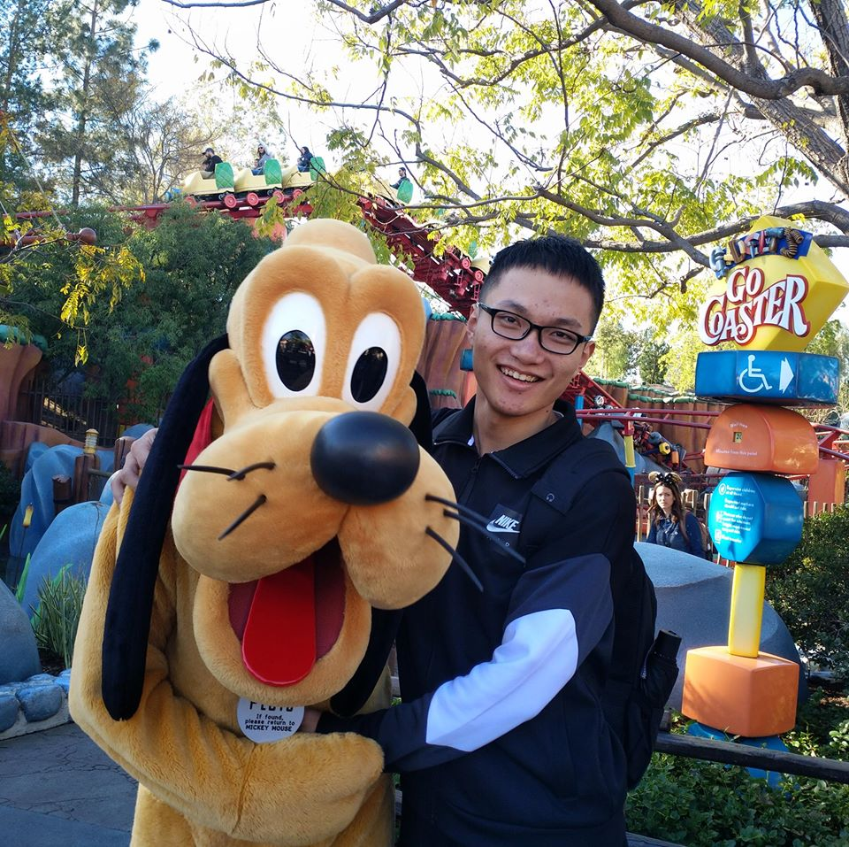

|

|
Yihua Huang
Email /
CV /
Linkedin /
Github /
Scholar
I am a 1st year PhD student from CVMI Lab supervised by Xiaojuan Qi, focusing on 3D/4D reconstruction, interaction, simulation and editing. Previously, I completed my master degree at the Institute of Computing Technology, Chinese Academy of Sciences, under the supervision of Professor Lin Gao. I am grateful for the valuable guidance and assistance provided by Prof. Gao. Additionally, I have also worked closely with Doctor Yan-Pei Cao and Professor Yu-Kun Lai, both of whom have greatly contributed to my learning experience. Prior to that, I obtained my bachelor degree at the University of Chinese Academy of Sciences, where I was supervised by the respectful Prof. Xilin Chen, who introduced me to my research field and taught the foundational class on conducting research.
|
|
Research
|
[7] SC-GS: Sparse-Controlled Gaussian Splatting for Editable Dynamic Scenes
Yihua Huang *,
Yang-Tian Sun*,
Ziyi Yang*,
Xiaoyang Lyu,
Yan-Pei Cao#,
Xiaojuan Qi#
IEEE Conference on Computer Vision and Pattern Recognition (CVPR), 2024
paper /
project page /
code
We introduce sparse-controlled gaussian splatting to synthesize dynamic novel views. With the learned node graph of sparse control points, real-time editing can be achieved with ARAP deformation by interactive dragging of users.
|
[6] NeRF-Texture: Synthesizing Neural Radiance Field Textures
Yihua Huang,
Yan-Pei Cao,
Yu-Kun Lai,
Ying Shan,
Lin Gao
IEEE Transactions on Pattern Analysis and Machine Intelligence (IEEE TPAMI), 2024
project page /
code
An enhanced version of the SIGGRAPH version, incorporating a synthesis algorithm for arbitrary manifolds, featuring additional experiments, ablations, and comprehensive analysis.
|
[5] NeRF-Texture: Texture Synthesis with Neural Radiance Fields
Yihua Huang,
Yan-Pei Cao,
Yu-Kun Lai,
Ying Shan,
Lin Gao
ACM SIGGRAPH 2023 Conference Proceedings (SIGGRAPH), 2023
paper /
project page /
code
We introduce a NeRF-based system to acquire, synthesize, map, and relight textures from real-world textures. A novel coarse-fine disentangling representation is proposed to model meso-structures of textures. Acquired textures are synthesized by an implicit patch-matching algorithm.
|
[4] Neural Radiance Fields from Sparse RGB-D Images for High-Quality View Synthesis
Yu-Jie Yuan,
Yu-Kun Lai,
Yihua Huang,
Leif Kobbelt,
Lin Gao,
IEEE Transactions on Pattern Analysis and Machine Intelligence (IEEE TPAMI), 2022
paper /
project page
We introduce a novel NeRF reconstruction method using RGB-D inputs from a consumer-level device (iPad), which enables high-quality reconstruction from sparse inputs. Experiments show that the proposed method achieves state-of-the-art novel view synthesis quality in this case of sparse RGB-D inputs.
|
[3] StylizedNeRF: Consistent 3D Scene Stylization as Stylized NeRF via 2D-3D Mutual Learning
Yihua Huang,
Yue He,
Yu-Jie Yuan,
Yu-Kun Lai,
Lin Gao
IEEE Conference on Computer Vision and Pattern Recognition (CVPR), 2022
arxiv /
project page /
code
We propose a novel mutual learning framework for 3D scene stylization that combines a 2D image stylization network and NeRF to fuse the stylization ability of 2D stylization network with the 3D consistency of NeRF.
|
[2] Learning Critically: Selective Self Distillation in Federated Learning on Non-IID Data
Yuting He,
Yiqiang Chen,
XiaoDong Yang,
Hanchao Yu,
Yihua Huang,
Yang Gu
IEEE Transactions on Big Data (TBD), 2022
paper
We propose a Selective Self-Distillation method for Federated learning (FedSSD), which imposes adaptive constraints on the local updates by self-distilling the global model's knowledge and selectively weighting it by evaluating the credibility at both the class and sample level.
|
[1] Multiscale Mesh Deformation Component Analysis with Attention-based Autoencoders
Jie Yang,
Lin Gao,
Qingyang Tan,
Yihua Huang,
Shihong Xia
Yu-Kun Lai
IEEE Transactions on Visualization and Computer Graphics (TVCG), 2021
arxiv
We propose a novel method to exact multiscale deformation components automatically with a stacked attention-based autoencoder.
|
|
Services
Internships: Tencent (2023 Summer)
Paper reviewer: CVPR, ICCV, ECCV, ACCV, Parcific Graphics, Virtual Reality, Computer & Graphics
Talk speaker: Deep Blue College 2023, Graphics And Mixed Environment Seminar (GAMES) 2022
|
|
{kind=link}